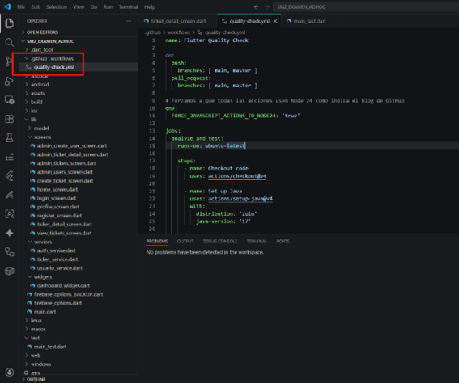
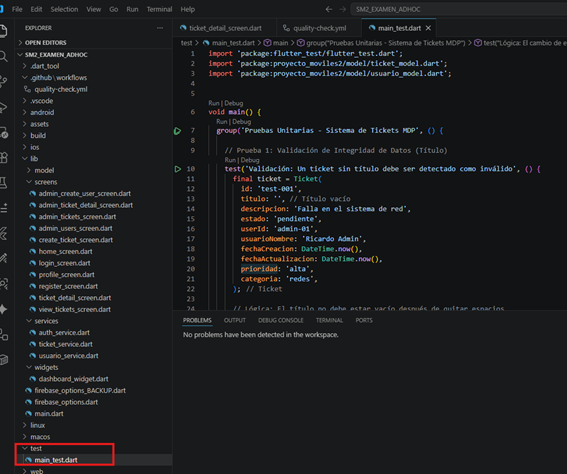
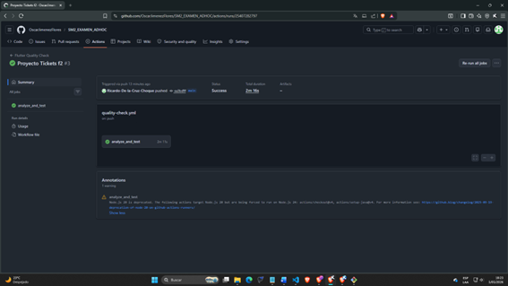

Para cumplir con los estándares de calidad exigidos por la Municipalidad de Pocollay y los criterios académicos de la EPIS, se ha implementado un ecosistema de Integración Continua (CI) que garantiza que cada cambio en el código sea robusto y funcional.
Se realizó una limpieza profunda del linter de Flutter, migrando APIs obsoletas como withOpacity a la nueva estructura de withValues y asegurando que todas las llamadas asíncronas respeten el ciclo de vida de los widgets mediante verificaciones de mounted. Asimismo, se profesionalizó el rastreo de errores utilizando developer.log en lugar de impresiones genéricas en consola.
Se desarrolló el archivo test/main_test.dart que contiene 3 pruebas críticas para la lógica de negocio:
Se configuró un flujo de trabajo en .github/workflows/quality-check.yml que utiliza Node.js 24 para ejecutar de forma autónoma el análisis estático y la suite de pruebas unitarias en un entorno Ubuntu, garantizando un estado 100% Passed.
Se cumple estrictamente con la rúbrica ubicando los flujos de trabajo en .github/workflows/ y las pruebas unitarias en test/.

El archivo quality-check.yml está configurado para realizar el análisis de linter y ejecutar las pruebas unitarias en cada evento de push.

Captura que evidencia el cumplimiento del criterio "100% Passed" en la pestaña Actions de GitHub.

git clone [https://github.com/OscarJimenezFlores/SM2_EXAMEN_ADHOC](https://github.com/OscarJimenezFlores/SM2_EXAMEN_ADHOC)